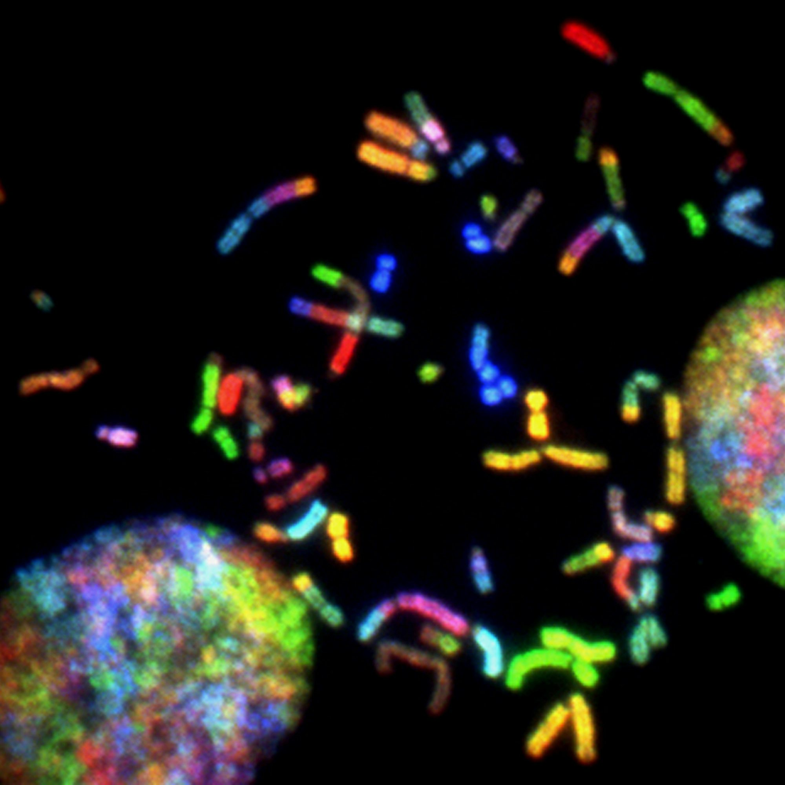
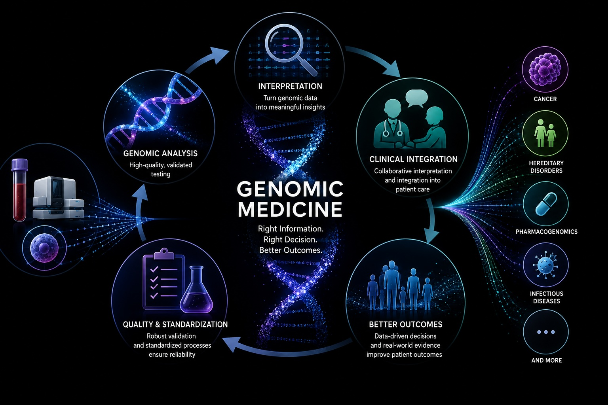
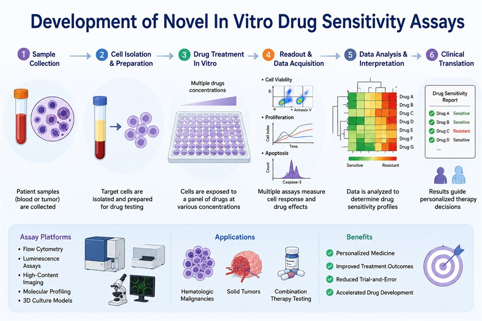
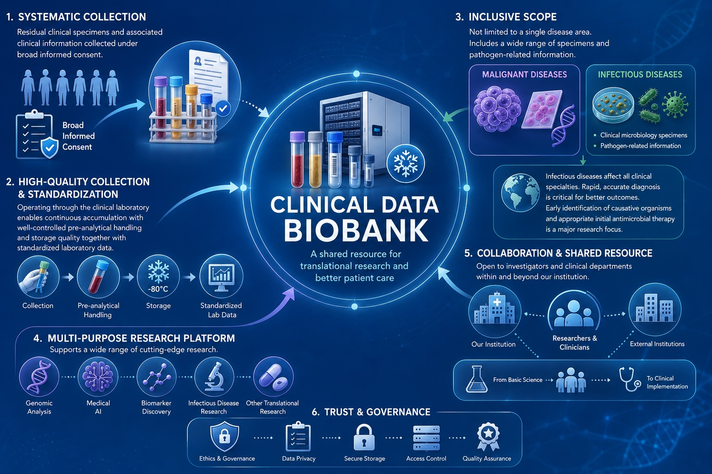

Research
Our Research
We are working to overcome hematologic malignancies by integrating basic, clinical, and laboratory medicine to develop new diagnostic and therapeutic approaches.
Research Projects
-
Molecular Mechanisms of Leukemia and Lymphoma

We aim to elucidate the molecular mechanisms underlying the onset and progression of hematological malignancies, with the goal of identifying novel therapeutic targets and developing new treatments. We focus particularly on aberrations in intracellular signaling pathways, including Notch signaling, and analyze the mechanisms governing tumor cell proliferation, survival, and drug resistance.
-
Development of Novel In Vitro Drug Sensitivity Assays

We are developing a drug sensitivity evaluation platform using patient-derived tumor cells to advance personalized medicine. By capturing patient-specific tumor characteristics that are difficult to reproduce in conventional cell line-based assays, we contribute to more accurate treatment selection and improved prediction of therapeutic outcomes.
-
Infectious Disease and Pathogen Typing Technologies

We are working on genotyping of pathogens including SARS-CoV-2 and the development of rapid diagnostic methods. Leveraging next-generation sequencing (NGS) and various gene analysis technologies, we advance the understanding of infectious disease dynamics, surveillance of emerging variants, and clinical application of novel diagnostic tools.
SUPPORT US
Support Our Research
Our research and education activities are supported by the generosity of our donors.
We would greatly appreciate your support in advancing research toward overcoming hematologic malignancies.